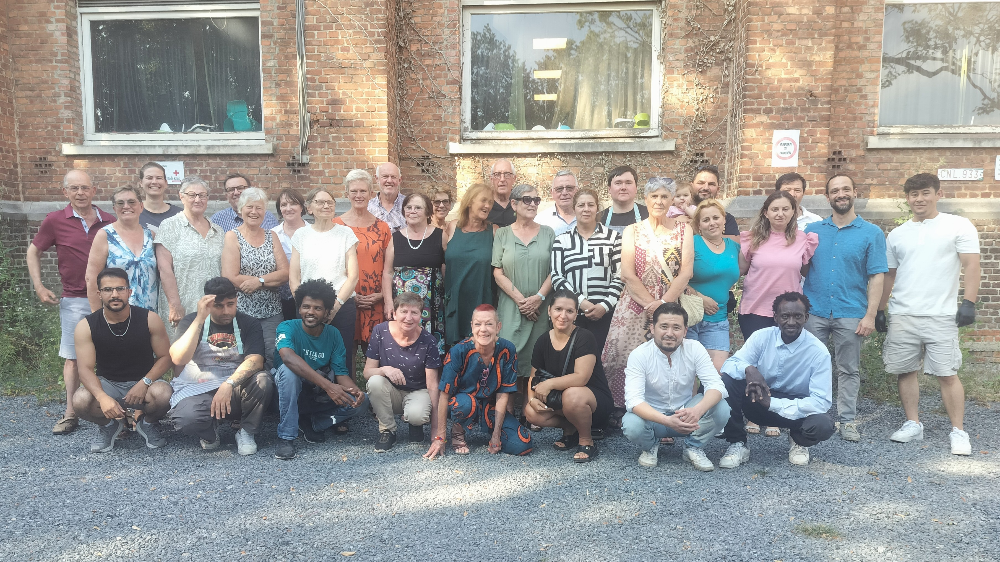
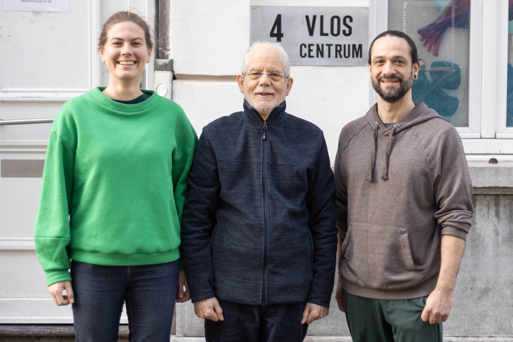
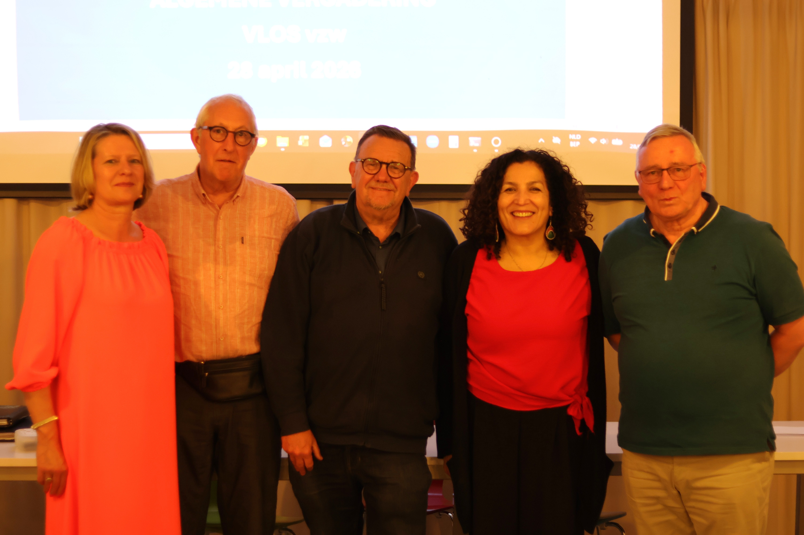

Vrijwilligers

Zonder vrijwilligers geen VLOS. De meer dan 70 actieve vrijwilligers vormen het kloppende hart van de werking. Ze zijn de helpende handen, het luisterende oor, de schouder om op te leunen. Ze beantwoorden vragen, sorteren kledij, verdelen voedsel, rijden rond met de camionette, maken fietsen... Kortom ze zijn onmisbaar!
Coördinatoren

Van links naar rechts: Caroline, Jozef, Sebastián
Raad van bestuur

Van links naar rechts: Els, Frank, Evert, Ursula, Luc